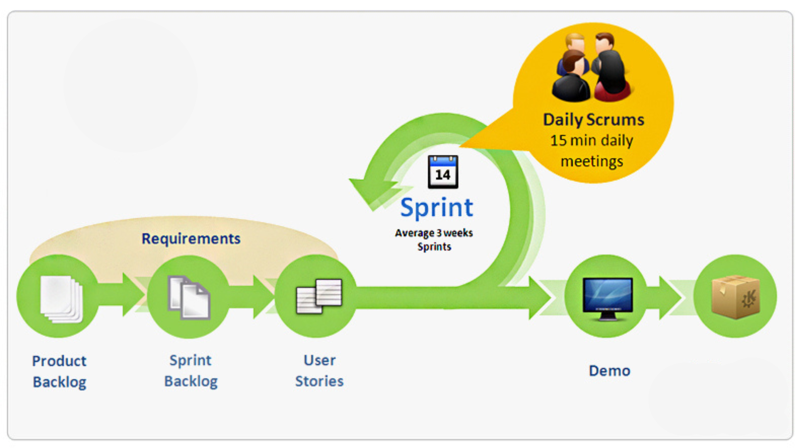
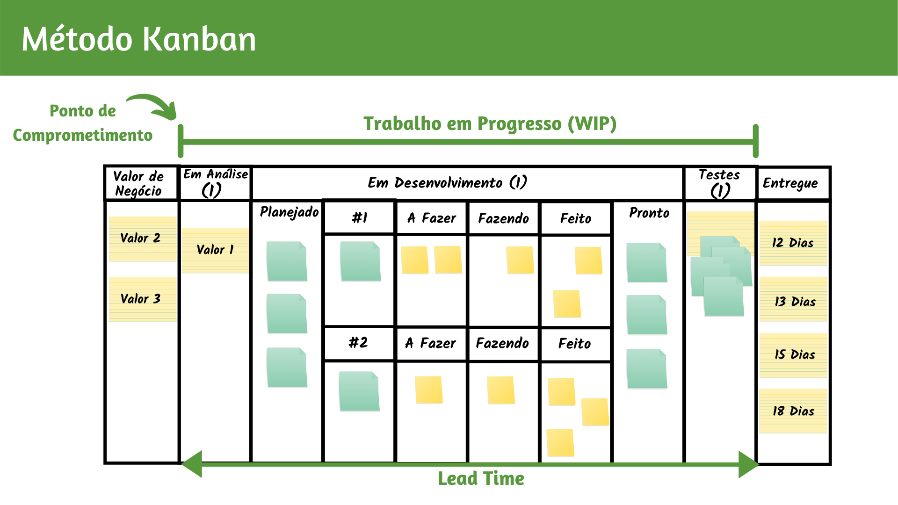
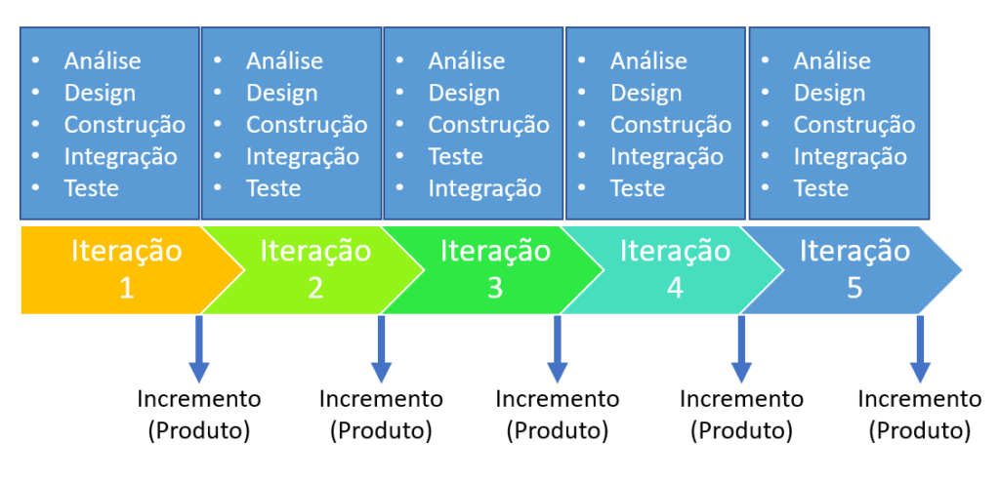

Na CactusCode, adotamos um modelo ágil que combina práticas do Scrum e do Kanban, complementado por elementos do Processo Unificado (PU). Essa combinação nos permite planejar, executar e monitorar projetos de forma eficiente, garantindo entregas frequentes e alinhadas às necessidades dos clientes.
Scrum: Estruturação por Sprints
O desenvolvimento é dividido em ciclos fixos, chamados de Sprints, com duração de 15 dias. Cada Sprint inicia-se com uma Sprint Planning, uma reunião onde o Product Backlog (lista de funcionalidades) é priorizado pelo Product Owner e a equipe escolhe as tarefas que conseguirá entregar nesse período. Essas tarefas são organizadas no Sprint Backlog, que orienta as atividades da equipe.
Durante cada Sprint, realizamos reuniões de acompanhamento, chamadas de Daily Scrum. Esses encontros rápidos (geralmente de 15 minutos) têm como objetivo identificar progressos, priorizar tarefas e resolver possíveis impedimentos. Ao final do ciclo, ocorre a Sprint Review, na qual a equipe apresenta os resultados ao cliente, garantindo feedback constante. Em seguida, realizamos uma Sprint Retrospective para discutir melhorias no processo e planejar o próximo Sprint.

Kanban: Visualização e Controle de Fluxo
Para gerenciar o fluxo de trabalho diário, utilizamos um quadro Kanban, implementado no Trello. Essa ferramenta é essencial para organizar as tarefas em etapas visuais, como "A Fazer", "Em Progresso" e "Concluído". No contexto do trabalho remoto, o Trello facilita a comunicação entre os membros da equipe e permite ao gerente de projetos acompanhar o progresso e identificar gargalos em tempo real.

Processo Unificado Ágil: Alinhamento Incremental
Adotamos práticas do Processo Unificado, que nos ajudam a reforçar a interação com o cliente e promover entregas incrementais. Ao término de cada Sprint, realizamos reuniões de apresentação, onde discutimos os resultados obtidos e alinhamos ajustes ou incrementos necessários. Esse ciclo contínuo de validação e evolução é essencial para garantir a qualidade e a relevância do que entregamos.

Mecanismo de Precificação e Segurança
O valor inicial do projeto é definido após o levantamento de requisitos, permitindo uma
estimativa mais precisa. Adotamos a preferência por pagamentos quinzenais, realizados após a
apresentação dos resultados de cada sprint. Essa abordagem reduz os riscos financeiros para
nossa equipe em caso de desistência por parte do cliente e mantém o time motivado e focado
no progresso contínuo.
Optamos por um modelo de contrato flexível e iterativo, que permite ajustes no valor ao longo
do projeto, dependendo dos resultados alcançados nos sprints. Isso proporciona maior
transparência e alinhamento com as demandas do cliente, além de garantir que tanto o escopo
quanto os custos permaneçam adaptáveis às mudanças durante o desenvolvimento.